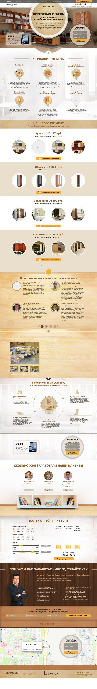
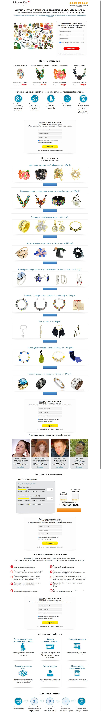

Что было сделано
- Извлечены страницы из веб-архива и собраны в самостоятельные сайты
- Скачаны и связаны все ресурсы: стили, скрипты, шрифты, изображения
- Переписаны пути к файлам — сайты работают локально и на любом хостинге
- Удалены нерабочие внешние скрипты, оставшиеся от старых сервисов
- Проверена вёрстка, адаптив и работа интерактивных элементов
Главная сложность
Около двадцати файлов веб-архив не сохранил — их не существует уже нигде. Среди них логотип, часть фотографий, фоны и иконки интерфейса. Я воссоздала эти элементы вручную в стиле оригинала: подобрала цвета, размеры и форму так, чтобы страницы выглядели целостно и разница не бросалась в глаза.
Сайт 1 — каталог корпусной мебели
оффер, каталог, отзывы, калькулятор, карта
↕ Страница целиком — прокручивается внутри рамки
Сайт 2 — лендинг оптовой продажи бижутерии
каталог товаров, формы заявок, схема работы
↕ Страница целиком — прокручивается внутри рамки
Почему здесь скриншоты, а не живые ссылки
Оба сайта принадлежали конкретным компаниям и содержат их контактные данные. Публиковать рабочие копии в открытом доступе было бы некорректно, поэтому результат показан снимками. Сами файлы передаются заказчику.